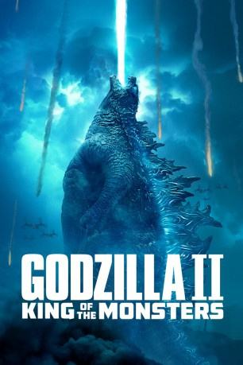

gesehen am 20.09.2019
gesehen am 20.09.2019Alternativ: Godzilla: King of the Monsters (Englischer Titel) gesehen am 20.09.2019
 
 IMDB-Wertung: 6.2 / 10
IMDB-Wertung: 6.2 / 10  Tomatometer: 41
Tomatometer: 41  Metascore:
Metascore: 
Nachdem der Nuklearwissenschaftler Joe Brody und sein beim US-Militär stationierter Sohn Ford herausfanden, dass der skrupellose Ichiro Serizawa nach einer Beinahe-Reaktorkatastrophe im japanischen Janjira an einer riesigen, urzeitlichen Kreatur herumexperimentiert, konnte gegen das „Muto“ getaufte Wesen nur einer etwas ausrichten: Godzilla. Jetzt müssen die Krypto-Zoologen von Monarch allerdings einen Weg finden, gleich mit einer Reihe von Urzeit-Monstern fertig zu werden. Eine entscheidende Rolle dabei spielt die Paleo-Biologin Emma Russell (Vera Farmiga), die einen Weg gefunden hat, via Sonar mit den gigantischen Wesen zu kommunizieren. Neben Godzilla, mit dem vor allem Russells Ex-Ehemann Mark (Kyle Chandler) eine Rechnung offen hat, sind es vor allem dessen Feinde Mothra, Rodan sowie der dreiköpfige King Ghidorah, die den Lebensraum der Menschen für immer zerstören könnten …
Jahr: 2019
Dauer: 131 Minuten
FSK: 12
Land: USA Studio: Warner Bros.Tonspuren: DTS - ,
Untertitel: Deutsch,
Auflösung: 1080p (1920x800) Größe: 7925 MB
Genre: Action, Sci-Fi, Abenteuer, Fantasy
Regisseur: Michael Dougherty
Drehbuch: Michael Dougherty, Zach Shields, Max Borenstein, Michael Dougherty, Zach Shields
Soundtrack: Bear McCreary
Darsteller:
 Ken Watanabe als Dr. Ishiro Serizawa
Ken Watanabe als Dr. Ishiro Serizawa Aisha Hinds als Colonel Diane Foster
Aisha Hinds als Colonel Diane Foster Fiona Hardingham als News Anchor
Fiona Hardingham als News Anchor Marko Caka als Jonah's Mercenary #9 (uncredited)
Marko Caka als Jonah's Mercenary #9 (uncredited)Datei: X:\7+mehr(A-Z)\Godzilla\Godzilla II King of the Monsters (2019, FSK12, 1920x800).mkv seit 20.09.2019
Festplatte: HD Collection-7+mehr(A-Z)+Person
 Es gibt insgesamt 13 Filme in der Gruppe '7+mehr(A-Z)\Godzilla'
Es gibt insgesamt 13 Filme in der Gruppe '7+mehr(A-Z)\Godzilla'